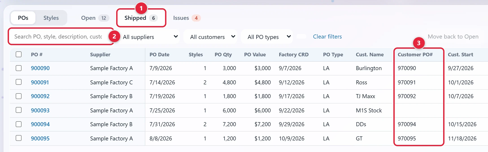
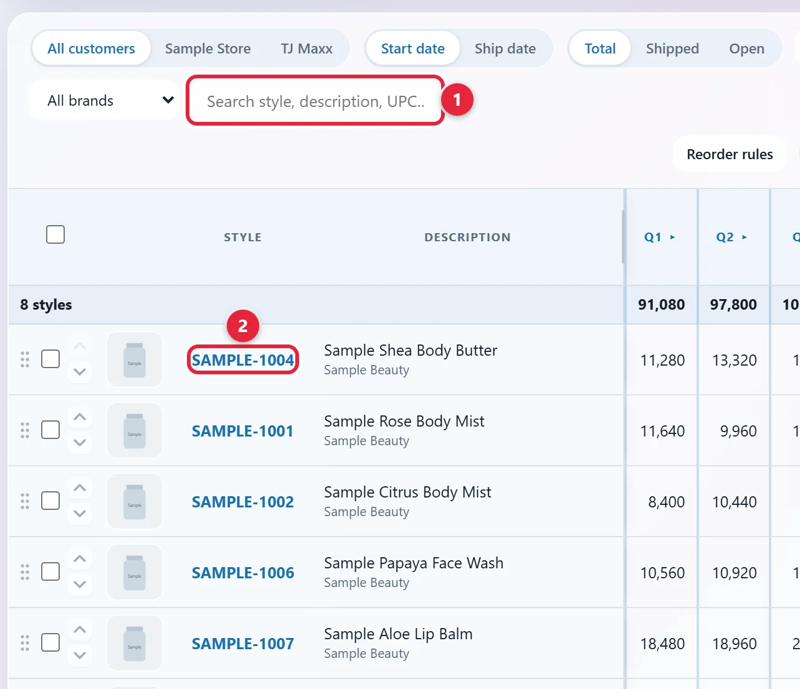
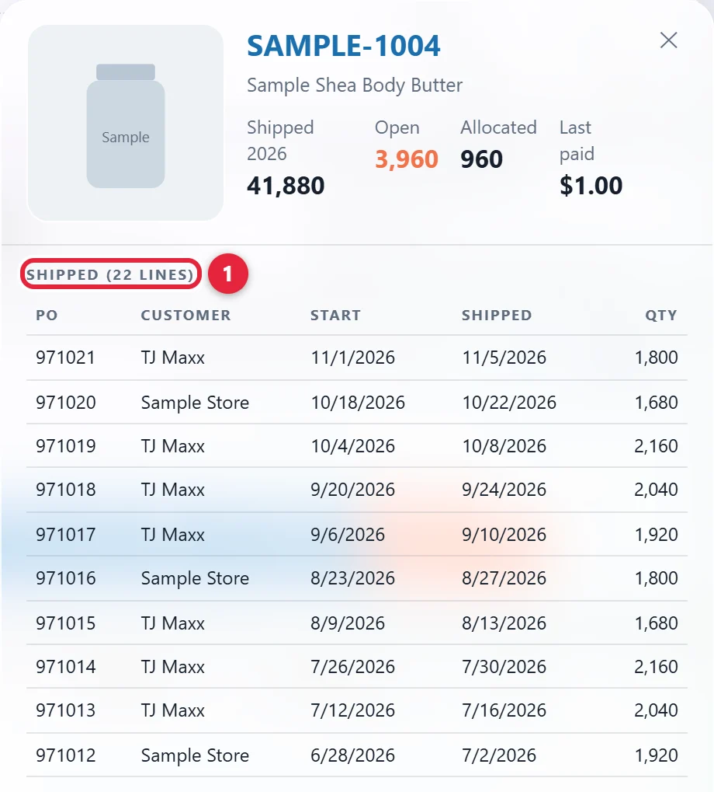
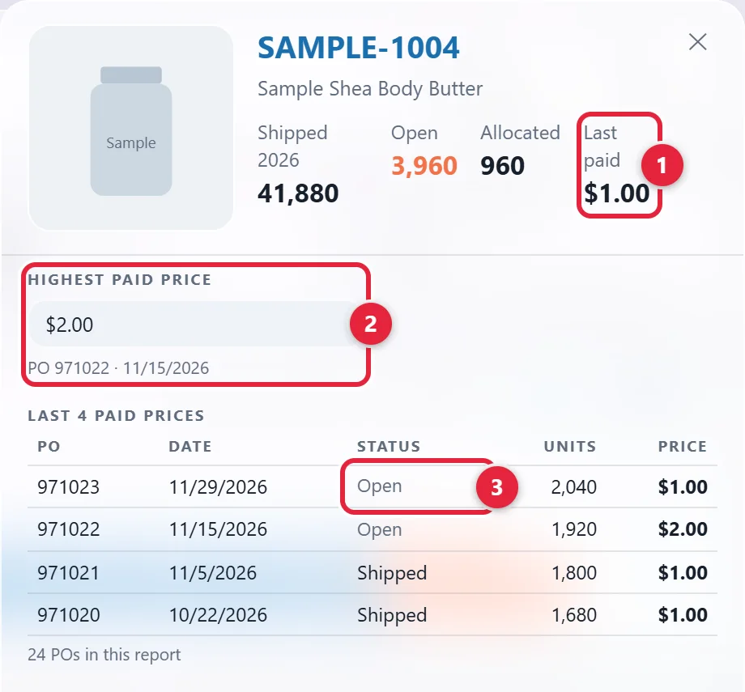

Invoice the customer once the order ships, then follow the invoice until it's paid.
Draft. None of our tools covers this process, so these steps are general practice. Only the look-ups in the PO Book and the TJX Tracker come from our tools.
Jump to: Issue the invoice · Follow the invoice · Look up what shipped to TJX · "Paid" in the TJX Tracker
Saul to confirm which system to use, each customer's terms and how it wants its invoice (see the yellow Draft note at the top). Until then, ask Saul.
Screenshots use made-up sample data. Click any picture to see it larger.
Check these four things:
For an order from TJX (the company that owns TJ Maxx), the TJX Tracker can help. See Look up what shipped to TJX. For other customers, ask Saul until this is confirmed.
Click Open PO Book above. Sign in with your Metro1 Microsoft account if it asks. Click the Shipped tab 1.

Type the PO number or style in the search box 2. Read Customer PO# 3. If you can't see that column, scroll the table to the right. If you see Nothing matches these filters, click Open.
Customer PO# is blank for M1S Stock, because those orders have no outside customer. If it's blank on a customer order, ask Production. Find a PO has more on this screen.
Put the customer's PO number and the agreed terms on it. The agreed terms say when and how the customer must pay.
Send it the way that customer requires.
Ask Saul where to record them, until this is confirmed.
Saul to confirm where unpaid invoices are listed and how often to review them. Until then, ask Saul.
Do this regularly.
An invoice is overdue once its due date has passed.
Do this when the payment arrives.
A short payment means the customer paid less than the invoice. A deduction is an amount the customer took off. Resolve it with Sales.
The TJX Tracker shows what the weekly TJX report says about TJX orders. It doesn't cover other customers.
Click Open TJX Tracker above. Click Sign in with Microsoft if it asks. If it says you don't have access, ask Saul.
Type the style number or description in Search style, description, UPC…, above the table 1. It doesn't find PO numbers. If you only have a PO number, look up its styles in the PO Book first: click Styles and search for the PO.

It's in the STYLE column 2. A panel opens at the right.
The SHIPPED heading 1 says how many lines there are. The table under it lists the style's latest 25 shipped lines:

The panel only knows what's in the report on screen. The REPORT list at the top of the page shows that report's date.
The weekly TJX report lists open sales orders and invoices. Even with "Invoice" in its name, it follows order lines, not payments. It can't tell you if an invoice has been paid.

"Paid" there means the last price paid. It's a price per unit, not money received.
| You need | Where it is |
|---|---|
| The customer's PO number | Customer PO# in the PO Book. It comes from the Notes on Master Sheet Live, so it's blank if the Notes give no PO. It's always blank for M1S Stock, because those orders have no outside customer. If it's blank on a customer order, ask Production. Find a PO shows how. |
| What shipped on a TJX order | SHIPPED in the TJX Tracker's panel. See Look up what shipped to TJX. |
| Agreed terms, how a customer wants its invoice, and what has been paid | None of our tools holds these. Saul to confirm where they are. |